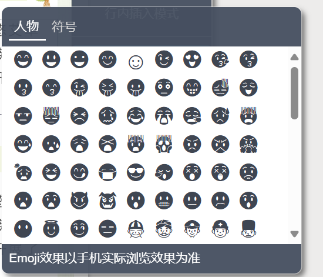

✨ 文字调整
1.复制粘贴
排版工作一般会有现成的文案内容，只需要复制，然后粘贴到秀米里的卡片里。

秀米会默认清除掉原来格式样式。
⚠️ 注意 虽然秀米能够保留原来格式，但特殊字体无法发布到微信公众号。
2.文字工具条
仅套用模板的排版略显粗糙，还要通过文字工具条调整字号、粗细、颜色来区分层级。

接下来详细介绍工具条的每项功能。
✏️ 字体设置
- 秀米字体提供 默认字体 + 四种苹方字体（苹方字体在 iOS 下效果更佳），一般默认字体即可。

⚠️ 注意
虽然秀米能够更改为其他字体，但特殊字体无法发布到微信公众号，故不建议改动。
🔠 字号设置
字号不仅能点选，还可 手动输入数值。
字号的大小主要用于区分文章层级。推荐设置：
| 字号 | 用途说明 |
|---|---|
| 21–24 | 一级段落标题（字数在一行左右） |
| 18–20 | 一级或二级段落标题（字数在一行或以上） |
| 14–16 | 正文（16 号适用于西文正文字体） |
| 10–12 | 注释 |
合理的字体搭配能够让推文富有层次感。

🎨 颜色设置
做法
👉 步骤：选中修改文字→ 点击字号设置的右侧 圆圈→侧边栏选择颜色
- 侧边栏上方是页面中已经存在的颜色，会与主题色贴近，整体色彩更加协调
- 下方点击加号可以自定义纯色或渐变色。

思路
- 重要内容（标题，时间，地点）用深色，次要内容用浅色（注释，点缀，英文）
- 浅色背景用深色 深色背景用浅色
- 正文不参与调色，一般浅色背景用黑色 深色背景用白色

🟨 底色设置
文字底色，即给文字添加一层背景色。
👉 步骤：选中文字 →点击小三角形→ 点击文字底色 →进入侧边栏

🌈 阴影设置
文字阴影同样在颜色的小三角里，直接设计难度较大，不妨利用现成的模板。
👉 步骤：选中文字 →点击小三角形→ 点击文字阴影 →点击侧边栏上方模板

有彩虹字、空心字、立体字、3D字、描边字等多种艺术字可以选择。
📐 对齐设置
文字对齐在颜色选择右侧，默认是居中对齐，点小三角形展开，对齐方式有四种：
- 左对齐
- 居中对齐（默认）
- 右对齐
- 两端对齐

🔤 其他样式
在对齐按钮右侧四个标签：
- 加粗
- 斜体
- 下划线（可自定义）
- 删除线（可自定义）

它们主要用于突出和强调。
📑 文字分段设置
通过 文字分段功能，可以把一长段文字拆成多个独立文字组件。
⚠️ 注意：排版最忌讳大段单一的文字，容易降低可读性，所以需要图文穿插。如果图片太少，也可以不同段落采取不同卡片模板。

分段与回车的区别：
- 回车键：仅换行，仍在同一组件，样式统一。
- 分段功能：可拆分为多个组件，样式可独立设置。
3.格式刷
格式刷操作分两步：
1. 提取格式：选中文字 →点击提取格式 →出现格式列表

2. 应用格式：选中文字 →点击列表

清除格式：选中文字 →展开提取格式→点击清除格式

4.文字格式设置
点击工具条上的 格式 选项，可以看到多种设置功能：

↪️ 首行缩进
用在段落开头，将文字缩进两个字符。

⚠️ 注意
- 段落开头都需要使用首行缩进而非Tab
首行缩进和Tab/空格的区别：
- 首行缩进（推荐）：编辑器自带样式，跨设备一致
- Tab缩进/空格：不同设备显示不一，换行后容易错乱
🔢 编号 / 符号列表
- 编号列表：以数字标注层级
- 符号列表：以圆点符号标注

⬆️⬇️ 文字上标 / 下标
用于数据、符号或说明标注。

🔡 西文打断
用于文中英文内容时，使排版更紧凑。

😀 插入符号
在文中插入Emoji或特殊符号。

🖼️ 行内插入模式
把图片、SVG、表情等当作文字的一部分嵌入段落中。
适合在正文中插入小图标或自定义表情。

↔️↕️ 横排 / 竖排文字
控制文字展示方向。

5.文字间距设置
这些设置能让排版更具层次感，数值应适当，不宜过大或过小。
- 行间距（常用 1.8）
- 字间距（默认 0，越大越松散）
- 段落间距（常用 10px）
- 页边距（建议 15 左右）

6.小结
文字调整不仅仅是修饰，而是让排版更有层次感与可读性。
- 字号、颜色、对齐、样式等工具是调整细节的基础
- 格式刷、分段、行内插入等功能让排版更灵活
- 文字间距和细节设置决定了整体是否舒适
👉 practice makes perfect!
作者：杜若冰 参考文献：秀米教程